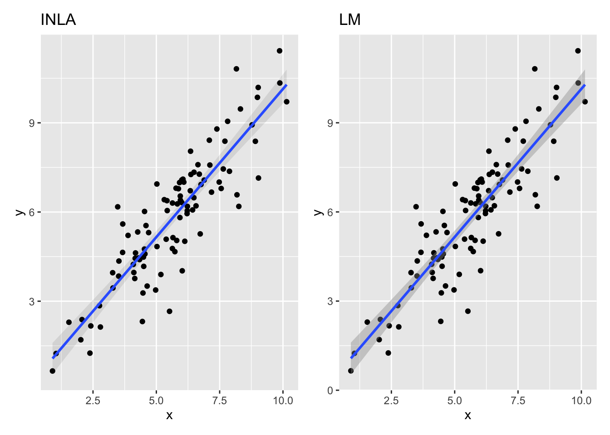
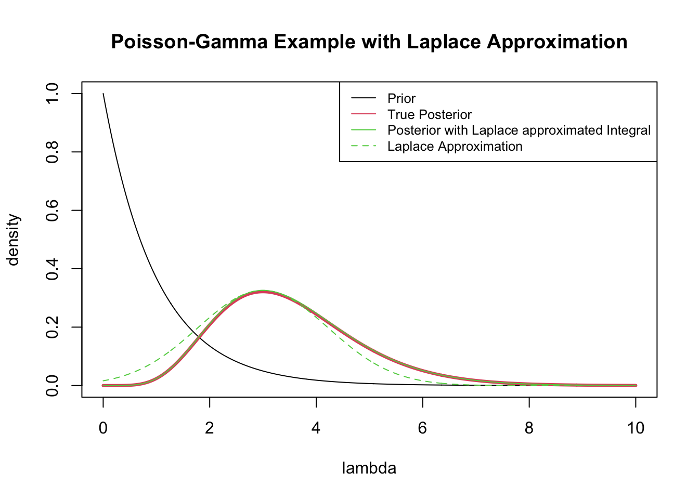
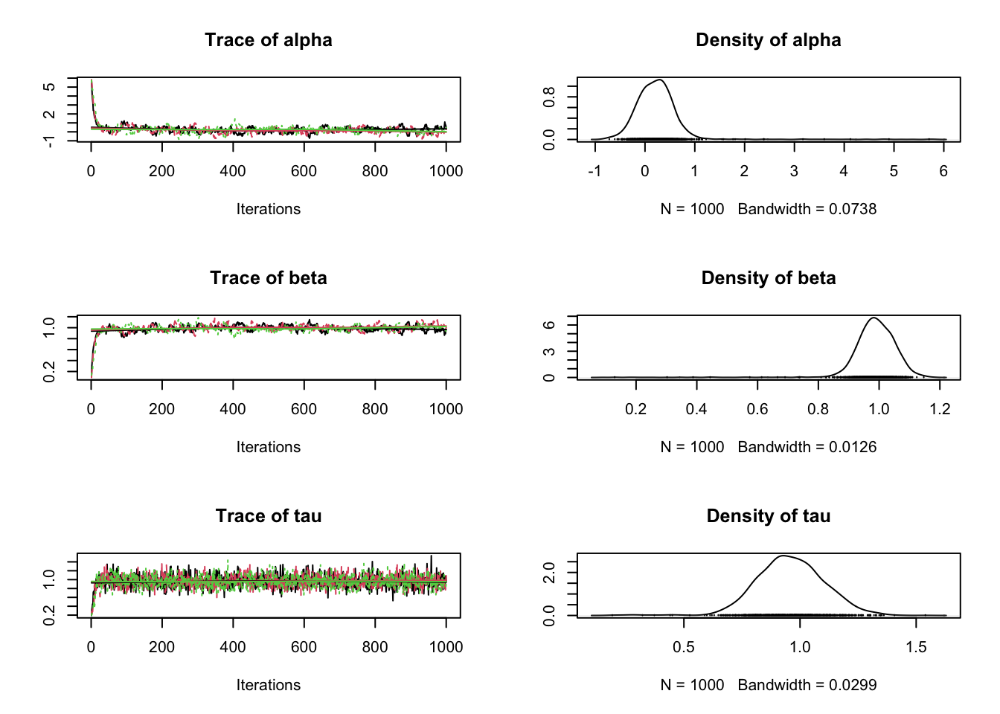

This is INLA_19.09.03 built 2022-05-17 20:58:09 UTC.
See www.r-inla.org/contact-us for how to get help.
To enable PARDISO sparse library; see inla.pardiso()
The software mostly is split up by the methodology that each method uses. Seems like results will vary, and syntax also will vary. Trade-offs on speed and use cases.
R Software
INLA - integrated nested laplace approximations. Uses R formula syntax
not on CRAN because it uses a C library that is machine dependent
option to use pardiso optimizer, for which you need a license.
BUGS - MCMC based sampling
has many different versions, seems easier to install on windows
JAGS
the original MCMC based solutions, has an R implementation with “rjags”
Stands for “Just Another Gibbs Sampler”
text file specification of the model
reimplementation of “BUGS”
rstan - does some magical Hamiltonion Monte Carlo, which supp
brms - uses STAN as backend, but allows linear and nonlinear models with R formula syntax. Offers more flexibility than rstanarm
rstanarm - meant as a drop in replacement using STAN for many base R and lme4 models. The main difference is that these models are precompiled in STAN code, while brms will compile everytime into new STAN code, thus will be slower for basic models. However, what you trade in slowness you get flexibility.
blavaan - latent variable modeling, like SEM modeling, latent growth curve models, confirmatory factor analysis.
4.2 INLA
Broadly speaking, INLA is for a broad class of models used for Guassian markov random fields (GMRF). INLA tends to be faster than other methods, because the software is based on Laplace Approximation. Because of that, it is also a deterministic method unlike stochastic MCMC based software like STAN or BUGS/JAGS
install.packages("INLA",repos=c(getOption("repos"),INLA="https://inla.r-inla-download.org/R/testing"), dep=TRUE) # R > 4.1
But I keep getting an error:
Error in inla.call.builtin() : INLA installation error; no such file
so i tried installing directly from github with devtools.
/usr/local/lib/R/4.1/site-library/INLA/bin/mac/64bit/inla.run: line 125: /usr/local/lib/R/4.1/site-library/INLA/bin/mac/64bit/inla: No such file or directory
The “devel” version unfortunately gives the following error, so trying the stable version.
Download the precompiled binary here: https://inla.r-inla-download.org/R/testing/bin/macosx/contrib/4.1/
back up directories if you need a different binary
From R, run install.packages("pathtobinary.tgz", repos = NULL)
Pardiso License
Pardiso is parallel computing library, stands for “Parallel Sparse Direct Solver”, and academics can get a license, just need to set the $PARDISO_LIC_PATH to where you download the license
There might be some useful documentation on how R finds its matrix libraries.
See the Advanced R sections for more on how R finds its libraries. Ultimnately, after some permissioning issues, we have a working example.
4.2.2 INLA Basics
inla() - this is the main function that is used from the package.
formula - formula object
data - the dataframe
family - string or vector to
4.2.3 INLA Examples (simulated)
Linear Regression
We first simulate some data, and plot the points that
Code
# create the simulated dataN <-100# 500, 5000, 25000, 100000x <-rnorm(N, mean =6, sd =2)y <-rnorm(N, mean = x, sd =1)dat_simple <-list(x = x, y = y, N = N)
Code
# Basic fit of model, assuming gaussian linkmod <-inla(y ~ x,family ="gaussian",data = dat_simple,control.predictor =list(link =1))
You can plot the posterior mean for each of the observations, but this plot is not particularly useful.
Code
# attributes(mod)# ?plot.inla# methods("inla")plot(mod, plot.prior =TRUE, single=TRUE) # Plotting the posterior mean for fitted values, with index on axis.
In order to access the estimated coefficients and standard deviations of each parameter, we can use
# Plot solution from INLA, with prediction boundsg_inla_slr <-data.frame(dat_simple) %>%ggplot(aes(x, y)) +geom_point() +geom_ribbon(aes(y = mean, ymin =`0.025quant`, ymax=`0.975quant`),data = mod$summary.fitted.values,alpha = .1) +geom_smooth(aes(y = mean), formula = y~x, method="lm", data = mod$summary.fitted.values) +labs(title ="INLA")# Plot solution from lmg_smooth_slr <-data.frame(dat_simple) %>%ggplot(aes(x, y)) +geom_point() +geom_smooth(formula = y~x, method="lm") +labs(title ="LM")g_inla_slr + g_smooth_slr

Clearly the INLA solution is very very similar to the one produced by LM as we expected.
4.2.4 Laplace Approximation
Let’s see an example with a closed form solution conjugate families. A good example of one is the Poisson-Gamma.
\begin{aligned}
Y | \lambda &\sim Poisson(\lambda) \\
\lambda &\sim \Gamma(\alpha, \beta)
\end{aligned}
Suppose we observe that y = 6, and we set a prior \alpha=\beta=1.
The update for poisson-gamma upon observing y_1, y_2, y_3, \dots, y_n, (note this is using the rate parameterization, \beta^\alpha in the numerator)
\begin{aligned}
\Gamma(\alpha, \beta) \longrightarrow \Gamma(\alpha + \sum_i y_i \, , \beta + n)
\end{aligned}
Hence, the true posterior is \Gamma(1+6, 1 +1), which has density,
\begin{aligned}
p(\lambda | Y=6) = \frac{2^7}{\Gamma(2)}\exp(-2 \lambda)\lambda^{7 - 1}
\end{aligned}
If we didn’t know this, then we would be trying to approximate the integral in the denominator of bayes rule, we do this with Laplace’s Approximation,
\begin{aligned}
p(\lambda|y) &= \frac{f(y|\lambda) \xi(\lambda)}{\int f(y|\lambda)\xi(\lambda)\, d\lambda} \\
\end{aligned}
to approximate the bottom, we have
where h = \log \left[f(y|\lambda) \xi(\lambda)\right], and h''(\lambda_0) is the second derivative evaluated at \lambda_0, the maximum of the integrand f(y|\lambda) \xi(\lambda). Finding the maximum can be done with an optimization procedure, optim or it can be done analytically.
Setting h'(\lambda) = 0, we find the maximum of the integrand to be \lambda_0 = 3
\begin{aligned}
h''(\lambda) &= -\frac{6}{\lambda^2} \\
-h''(\lambda)^{-1} &= \frac{\lambda^2}{6}
\end{aligned}
Evaluating the maximum, we get -h''(\lambda_0)^{-1} = 1.5. Now we’re ready to code it up!
Code
# Poisson-Gamma Update# gamma(a, b) -> gamma(a + \sum_i x_i, b + n)# Let prior be gamma(1, 1)# Observe y = 6# True Posterior is gamma(1 + 6, 1 + 1)lgrid <-seq(0, 10, .01)plot(lgrid, dgamma(lgrid, 1, 1), type="l", xlab="lambda", ylab="density")lines(lgrid,dgamma(lgrid, 7, 2), type="l", col=2)legend("topright",legend =c("Prior", "Posterior"), col =c(1, 2),lty=1)
# integral approximation is# likelihood * prior * constant based on curvurature of function# The constant in the denominator of Bayes rule, also the integral approximationZ <-dpois(6, lambda = est_mode) *dgamma(est_mode, 1, 1) *sqrt(2* pi * est_cov)posterior <-function(lambda) {dpois(6, lambda = lambda) *dgamma(lambda, 1, 1) / Z}
Code
plot(lgrid, dgamma(lgrid, 1, 1), type="l", xlab="lambda", ylab="density",main ="Poisson-Gamma Example with Laplace Approximation")lines(lgrid,dgamma(lgrid, 7, 2), type="l", col=2, lwd=3)lines(lgrid, posterior(lgrid), type ="l", col=3)lines(lgrid, dnorm(lgrid, mean=est_mode, sd =sqrt(est_cov)), type ="l", col=3, lty=2) # The approximating normal distribution used in laplace approximation, centered on posterior meanlegend("topright", legend =c("Prior", "True Posterior", "Posterior with Laplace approximated Integral", "Laplace Approximation"), lty =c(1, 1, 1, 2),col =c(1, 2, 3, 3),cex = .8)

Code
# A different way of visualizing the above informationplot(dgamma(0:10, 7, 2), posterior(0:10), pch=19, cex=.2, xlab ="True Posterior density, Gamma(7,2)",ylab ="posterior density by laplace approximation",main ="Comparison of True Posterior and Laplace Approximation")abline(0,1, col=2)legend("bottomright", col =c(1,2), pch =c(19,-1), lty=c(0, 1), legend =c("evaluated densities", "line of equality"))
Resources used when writing this section - https://www.sumsar.net/blog/2013/11/easy-laplace-approximation/ - https://bookdown.org/rdpeng/advstatcomp/laplace-approximation.html - https://en.wikipedia.org/wiki/Laplace%27s_method
Warning: Tail Effective Samples Size (ESS) is too low, indicating posterior variances and tail quantiles may be unreliable.
Running the chains for more iterations may help. See
https://mc-stan.org/misc/warnings.html#tail-ess
# https://www.precision-analytics.ca/articles/a-gentle-inla-tutorial/# Save BUGS style specification to .txt filecat("model { for(i in 1:N) { y[i] ~ dnorm(mu[i], tau) mu[i] <- alpha + beta * x[i] } alpha ~ dnorm(0, 0.001) beta ~ dnorm(0, 0.001) tau ~ dgamma(0.01, 0.01)}", file="jags_slr.txt")# Initialize the Model jags_mod_slr <-jags.model(file ="jags_slr.txt",data = dat_simple,n.chains =3,)
Compiling model graph
Resolving undeclared variables
Allocating nodes
Graph information:
Observed stochastic nodes: 100
Unobserved stochastic nodes: 3
Total graph size: 407
Initializing model
Code
# Run Jags and save posterior samplesparams <-c("alpha", "beta", "tau")samps <-coda.samples(jags_mod_slr, params, n.iter=1000)summary(samps)
Iterations = 1:1000
Thinning interval = 1
Number of chains = 3
Sample size per chain = 1000
1. Empirical mean and standard deviation for each variable,
plus standard error of the mean:
Mean SD Naive SE Time-series SE
alpha 0.2382 0.50615 0.009241 0.039769
beta 0.9858 0.08229 0.001502 0.006511
tau 0.9590 0.14776 0.002698 0.004212
2. Quantiles for each variable:
2.5% 25% 50% 75% 97.5%
alpha -0.4555 -0.02924 0.2080 0.4334 0.9664
beta 0.8656 0.95217 0.9898 1.0312 1.1020
tau 0.6885 0.86472 0.9578 1.0522 1.2467
Code
plot(samps)

These are the mixing plots and show posterior sample draws, as well as the density of those draws. We can see that the mixing times, and such stabilize quite quickly. We can see in the trace three dotted lines, because we requested three chains.